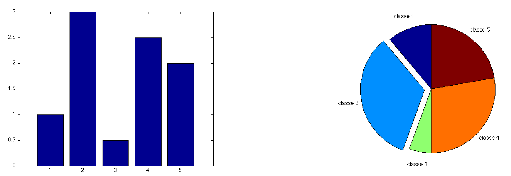
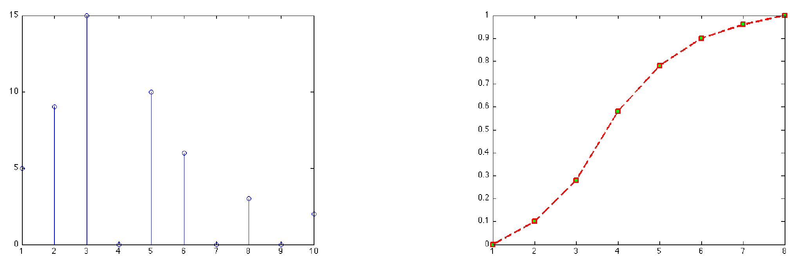
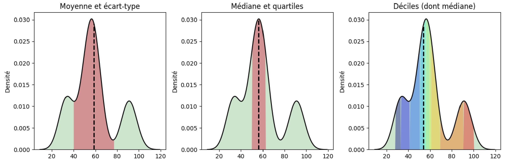
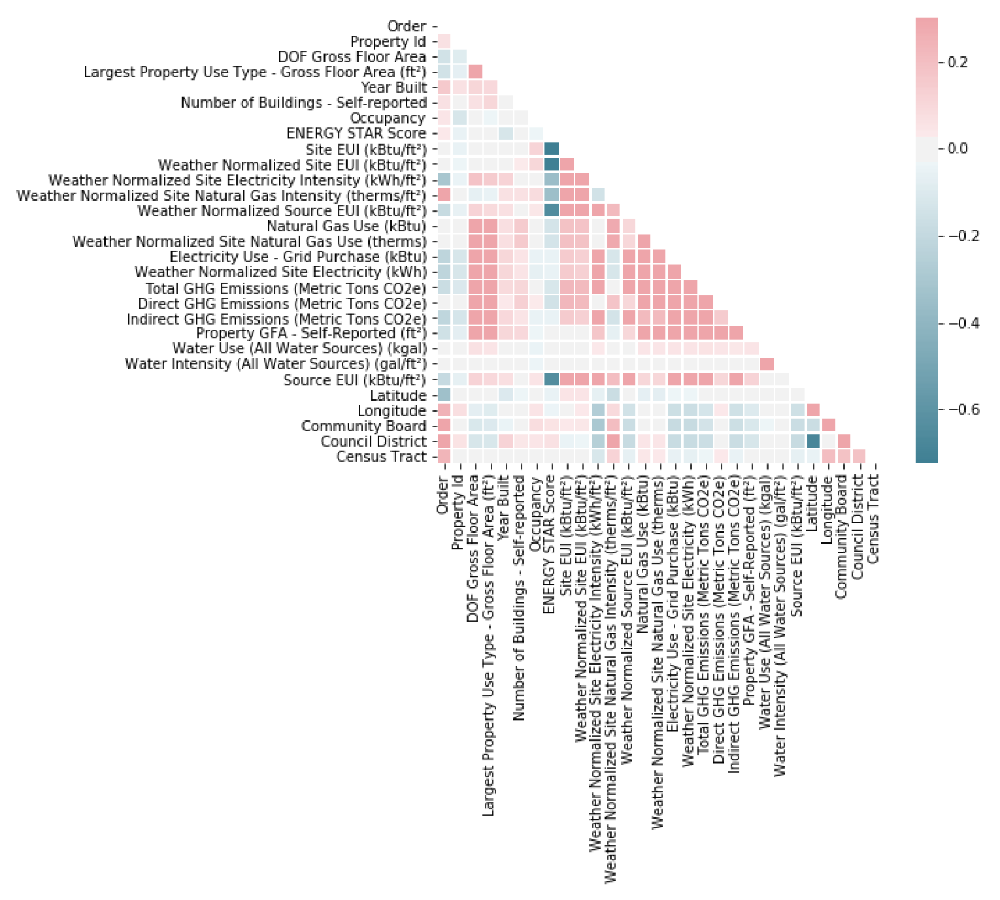
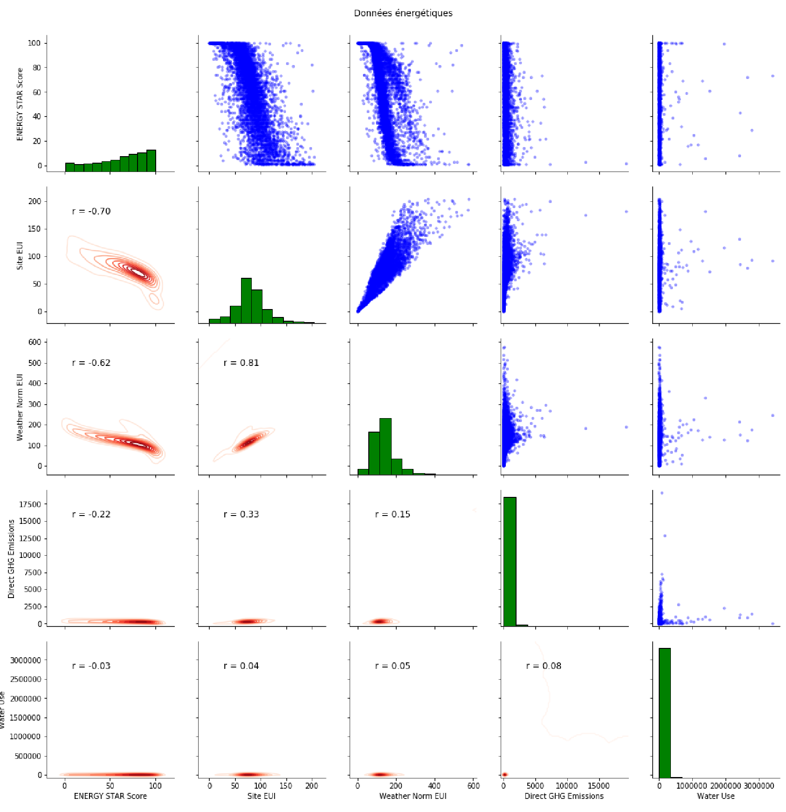

Statistique descriptive
Contents
Statistique descriptive#
Définitions#
Dans la suite, nous nous intéressons à des unités statistiques ou individus statistiques ou unités d’observation (individus, entreprises, ménages, données abstraites…). Bien que le cas infini soit envisageable, nous nous restreignons ici à l’étude d’un nombre fini de ces unités. Un ou plusieurs caractères (ou variables) est mesuré sur chaque unité. Les variables sont désignées par simplicité par une lettre. Leurs valeurs possibles sont appelées modalités et l’ensemble des valeurs possibles ou des modalités est appelé le domaine. L’ensemble des individus statistiques forment la population.
Typologie des variables#
La typologie des variables définit le type de problème statistique que l’on doit aborder :
Definition 16 (Variable qualitative)
La variable est dite qualitative lorsque les modalités sont des catégories. Suivant qu’il existe une relation d’ordre sur les catégories, on distingue :
la variable qualitative nominale, si les modalités ne peuvent pas être ordonnées
la variable qualitative ordinale, si les modalités peuvent être ordonnées
Definition 17 (Variable quantitative)
La variable est dite quantitative lorsque les modalités sont des valeurs numériques (scalaires ou vectorielles) :
la variable est quantitative discrète si les modalités forment un ensemble dénombrable
la variable quantitative est continue si les modalités vivent dans un espace continu.
Dans certains cas (l’âge par exemple), une variable d’un type (quantitative continue ici) peut être exprimée d’une autre manière pour des raisons pratiques de collecte ou de mesure. De même, les variables qualitatives ordinales peuvent être codées, par exemple selon une échelle de satisfaction.
Definition 18 (Série statistique)
On appelle série statistique une suite de \(n\) valeurs prises par une variable \(X\) sur les unités d’observation, notées \(x_1\cdots x_n\).
Variable qualitative nominale#
Une variable qualitative nominale a des valeurs distinctes qui ne peuvent pas être ordonnées. On note \(J\) le nombre de valeurs distinctes ou de modalités, notées \(x_1\cdots x_J\). On appelle effectif d’une modalité ou d’une valeur distincte le nombre de fois que cette modalité (ou valeur distincte) apparaît dans la série statistique. On note \(n_j\) l’effectif de la modalité \(x_j\). La fréquence d’une modalité \(j\) est alors égale à \(f_j=\frac{n_j}{n}\).
Le tableau statistique d’une variable qualitative nominale peut être représenté par deux types de graphiques. Les effectifs sont représentés par un diagramme en tuyau d’orgue et les fréquences par un diagramme en secteurs. Pour ce dernier, si le nombre de modalités devient trop important, la représentation perd de son intérêt.

Variable qualitative ordinale#
Le domaine peut être muni d’une relation d’ordre. Les valeurs distinctes d’une variable ordinale peuvent donc être ordonnées \(x_1\leq x_2\cdots\leq x_J\), à permutation près dans l’ordre croissant des indices. L’effectif cumulé \(N_j\) et la fréquence cumulée \(F_j\) des variables sont alors définis par \((\forall j\in[\![1,J]\!])\quad N_j=\displaystyle\sum_{i=1}^j n_i\quad \textrm {et}\quad F_j=\displaystyle\sum_{i=1}^j f_i\)
Les fréquences et les effectifs (cumulés ou non) peuvent être représentés sous la forme d’un diagramme en tuyaux d’orgue.
Variable quantitative discrète#
Le domaine d’une telle variable est dénombrable. Comme pour les variables qualitatives ordinales, on peut calculer les effectifs (cumulés ou non) et les fréquences (cumulées ou non).
La répartition des valeurs de la variable peut être représentée par un diagramme en bâtonnets. Les fréquences cumulées sont visualisées par la fonction de répartition de la variable , définie par
\(F(x) = \left \{ \begin{eqnarray} 0&\textrm{ si} &x<x_1\\ F_j &\textrm{ si}& x\in[x_j,x_{j+1}[\\ 1& \textrm{ si}& x_J\leq x \end{eqnarray}\right .\)

Variable quantitative continue#
Le domaine d’une variable quantitative continue est infini et est assimilé à \(\mathbb{R}\) ou à un intervalle de \(\mathbb{R}\). Cependant, la mesure étant limitée en précision, on peut traiter ces variables comme des variables discrètes.
La représentation graphique de ces variables (et la construction du tableau statistique) passe par le regroupement des modalités ou valeurs en classes. Le tableau ainsi construit est souvent appelé distribution groupée. La classe \(j\) est l’ensemble des valeurs incluses dans \([c^-_j,c^+_j[\), où \(c^-_j\) et \(c^+_j\) sont les bornes inférieure et supérieure de la classe. Sur cet intervalle, on peut calculer la fréquence \(f_j\) de la classe, la fréquence cumulée, l’effectif \(n_j\)… La répartition en classes nécessite de définir a priori le nombre de classes \(J\) et l’amplitude \(a_j\) des intervalles. Si elles peuvent être définies de manière empirique, quelques règles permettent d’établir \(J\) et l’amplitude pour une série statistique de \(n\) observations. Par exemple :
\(J=1+3.3log_{10}(n)\) (règle de Sturge)
\(J=2.5\sqrt[4\,]{n}\) (règle de Yule)
La représentation graphique se fait par exemple par histogramme. Les histogrammes sont des représentations de la distribution des données, agrégées par intervalles. A partir de l’étendue des données, on subdivise l’intervalle en \(k\) bins, de tailles \(t_k\) non nécessairement identiques, et on compte le nombre d’individus \(n_k\) rentrant dans chaque bin. L’histogramme peut alors être :
non normalisé : \(h_k = n_k\)
normalisé: \(h_k = n_k/t_k\)
import numpy as np
import matplotlib.pyplot as plt
X = np.loadtxt("./data/data.csv", delimiter=",")[:,1]
# Comptage des individus
def count(X, bins):
def findBin(x, bins):
for i, bin in enumerate(bins):
left, right = bin
if left <= x and x < right:
return i
return None
count = [0] * len(bins)
for x in X:
i = findBin(x, bins)
if i != None:
count[i] += 1
return count
# Affichage de l'histogramme
def plot_hist(X, bin_min, bin_max, bin_width,normed=True):
bins =[ [i, i+bin_width] for i in np.arange(bin_min, bin_max, bin_width) ]
bin_left = [ l for l, r in bins ]
bin_widths = [ r-l for l,r in bins ]
bin_height = [
float(c) / w if normed else c
for c,w in zip(count(X, bins), bin_widths)
]
plt.bar(bin_left,width=bin_width,height=bin_height)
plt.tight_layout()
bin_min = min(X)
bin_max = max(X)
plt.figure(figsize=(16, 4))
for subplot, binsize in ((141, 5),(142, 20), (143, 80), (144, 1000)):
title = 'Taille des bins : ', binsize
plt.subplot(subplot)
plt.title(title, fontsize=12)
plot_hist(X, bin_min, bin_max, binsize)

Le choix de la largeur \(t\) des bins dépend des données, et par exemple on a :
Loi de Scott : \(t = \frac{3.5 \sigma}{Card(X)^{1/3}}\), où \(\sigma\) est l’écart type des données.
Loi de Freedman–Diaconis : \( t = \frac{2 IQR}{Card(X)^{1/3}}\), où \(IQR\) est la distance interquartile.
Remark 5
Toutes les classes n’ont pas nécessairement la même amplitude
Les effectifs (ou les fréquences) sont représenté(e)s par un histogramme. Si l’on s’intéresse à la représentation des effectifs (resp. des fréquences), la densité d’effectif \(h_j\) (resp. de fréquence \(d_j\)), définie par \(h_j=\frac{n_j}{a_j}\) (resp. \(d_j=\frac{f_j}{a_j}\)), détermine la hauteur du rectangle représentant la classe \(j\). L’aire de l’histogramme est égale à l’effectif total \(n\) pour l’histogramme des effectifs, et à 1 pour l’histogramme des fréquences.
Comme dans le cas discret, la fonction de répartition peut être calculée de la manière suivante :
\(F(x) = \left \{ \begin{eqnarray} 0&\textrm{ si}& x<c^-_1\\ F_{j-1}+\frac{f_j}{c^+_j-c^-_j}(x-c^-_j) &\textrm{ si}& x\in[c^-_j,c^+_j[\\ 1& \textrm{ si}&c^+_J\leq x \end{eqnarray}\right .\)
Statistique descriptive univariée#
La statistique descriptive univariée consiste à étudier un ensemble d’unités d’observations, lorsque celles-ci sont décrites par une seule variable.
Soit donc \(X\) une variable et \(x_j,j\in [\![1,n]\!]\) l’ensemble des valeurs prises par cette variable, \(n_i\) étant le nombre de fois où la valeur \(x_i\) est prise. \(X\) peut être qualitative ou quantitative, les paramètres de description décrits dans la suite s’appliqueront à l’une de ces natures ou au deux.
Paramètres de position#
Plusieurs paramètres permettent de décrire la position “la plus représentative” d’une variable :
Definition 19 (Mode)
Le mode est la valeur distincte correspondant à l’effectif le plus élevé. Il est noté \(x_M\).
Le mode peut être calculé pour tout type de variable, n’est pas nécessairement unique. Lorsqu’une variable continue est découpée en classes, il est possible de définir une classe modale (classe correspondant à l’effectif le plus élevé)
Definition 20 (Moyennes)
Les moyennes ne peuvent être définies que sur des variables quantitatives. Plusieurs moyennes peuvent être calculées, parmi lesquelles :
la moyenne arithmétique \(\bar{x} = \frac{1}{n}{\displaystyle\sum_{i=1}^nx_i}= \frac{1}{n}{\displaystyle\sum_{i=1}^J n_ix_i}\). C’est le moment à l’origine d’ordre 1.
la moyenne géométrique : si les \(x_i\) sont positifs, la moyenne géométrique est la quantité \(G=\left (\displaystyle\prod_{i=1}^n x_i\right )^\frac{1}{n}\). C’est donc l’exponentielle de la moyenne arithmétique des logarithmes des valeurs observées.
a moyenne harmonique : si les \(x_i\) sont positifs, la moyenne harmonique est définie par \(H=\frac{n}{\displaystyle\sum_{i=1}^J 1/x_i}\)
la moyenne pondérée : dans certains cas, on n’accorde pas la même importance à toutes les observations (fiabilité, confiance…). La moyenne pondérée est alors définie par \(\bar{x}_w= \frac{\displaystyle\sum_{i=1}^n w_ix_i}{\displaystyle\sum_{i=1}^n w_i}\)
Dans le cas où \(\forall i,w_i=1/n\), la moyenne pondérée est la moyenne arithmétique. De plus, dans tous les cas, on peut montrer que \(H\leq G\leq \bar{x}\).
import numpy as np
import matplotlib.pyplot as plt
X = np.loadtxt("./data/data.csv", delimiter=",")[:,1]
def ArithmeticMean(X):
# calculable directement avec np.mean(X)
return float(sum(X)) / len(X)
def GeometricMean(X):
n=len(X)
p=1
for i in range(n):
p*=X[i]
return float(p**(1/n))
def HarmonicMean(X):
n=len(X)
s=0
for i in range(n):
s += 1/X[i]
return len(X) / s
def WeightedMean(X):
# Exemples de poids
w = np.random.rand(len(X))
return np.average(X,weights=w)
plt.figure(figsize=(8,4))
plt.rcParams['font.size'] = '16'
plt.plot(X, [0.01]*len(X), '|', color='k',label='Points')
for method, style, title in ((ArithmeticMean,'r','Arithmétique'),(GeometricMean,'b','Géométrique'),
(HarmonicMean,'g','Harmonique'),(WeightedMean,'y', 'Pondérée')):
m=method(X)
print (method.__name__, " : ",m)
plt.plot([m,m],[0,0.2],style,label=title)
plt.legend()
plt.tight_layout()
ArithmeticMean : 1316.3086347078017
GeometricMean : 1258.4787575642572
HarmonicMean : 1198.219210728503
WeightedMean : 1332.5375476708732

Definition 21 (Médiane)
La médiane, notée \(x_\frac{1}{2}\) est la valeur centrale de la série statistique triée par ordre croissant.
En d’autres termes, c’est la valeur de la série triée telle qu’au moins 50% des effectifs soient inférieurs à \(x_\frac{1}{2}\). Elle peut être calculée sur des variables quantitatives ou qualitatives ordinales (dans le cas où des échelles de valeur ont été définies).
Definition 22 (Quantiles)
Le quantile d’ordre \(p\) est défini par \(x_p=F^{-1}(p)\), où \(F\) est la fonction de répartition.
La notion de quantile généralise la notion de médiane. Si la fonction de répartition était continue et strictement croissante, la définition de \(x_p\) serait unique. Or \(F\) est discontinue et définie par paliers et les valeurs de quantiles varient suivant par exemple l’utilisation ou non d’une méthode d’interpolation de \(F\). Pour calculer \(x_p\), on peut par exemple considérer que si \(np\) est pair, \(x_p=\frac{x_{np}+x_{np+1}}{2}\) on remarque alors que la médiane est le quantile d’ordre \(\frac{1}{2}\) et sinon \(x_p=x_{\lceil{np}\rceil}\) En particulier, un quartile est chacune des 3 valeurs qui divisent les données triées en 4 parts égales, de sorte que chaque partie représente 1/4 de l’échantillon de population. On note \(Q_i\) le \(i^e\) quartile.
import numpy as np
import matplotlib.pyplot as plt
X = np.loadtxt("./data/data.csv", delimiter=",")[:,1]
plt.figure(figsize=(8,4))
plt.rcParams['font.size'] = '16'
plt.plot(X, [0.01]*len(X), '|', color='k',label='Points')
for q, style in ((25,'r'),(50,'b'),(75,'g')):
m=np.percentile(X,q)
print ("quartile ", q, " : ",m)
plt.plot([m,m],[0,0.2],style,label=q)
plt.legend()
plt.tight_layout()
quartile 25 : 905.9190521240237
quartile 50 : 1399.66320800781
quartile 75 : 1626.326538085935

Paramètres de dispersion#
Il est très souvent utile d’apprécier la dispersion des mesures autour du paramètre de position. Pour cela, sur des variables quantitatives uniquement, plusieurs outils sont disponibles :
Definition 23 (Etendue)
L’étendue est la simple différence entre la plus grande et la plus petite valeur observée.
Definition 24 (Déviation maximale)
La déviation maximale est définie par \( maxdev(X) = max \{ |X[i] - \bar{x}| \,|\, i=1,\dots,n\}\)
Definition 25 (Déviation moyenne absolue)
La déviation moyenne absolue est définie par \( mad(X) = \frac{1}{n} \sum_{i=1}^n |X[i] - \bar{x}|\)
Definition 26 (Distance interquartile)
La distance interquartile est la différence entre le troisième et le premier quartile. C’est une statistique robuste aux points aberrants.
Definition 27 (Variance)
La variance est la somme des carrés des écarts à la moyenne, normalisée par le nombre d’observations \(\sigma^2 = \frac{1}{n}\displaystyle\sum_{i=1}^n\left (x_i-\bar{x}\right )^2\)
Cette variance est dite biaisée. La variance non biaisée est obtenue en divisant non pas par \(n\), mais par \(n-1\).
Definition 28 (Ecart type)
L’écart type est la racine carrée de la variance.
Definition 29 (Ecart moyen absolu)
L’écart moyen absolu est la somme des valeurs absolues des écarts à la moyenne divisée par le nombre d’observations.
Notons qu’il s’agit de la distance \(L_1\) du vecteur des observations au vecteur composé de la valeur moyenne, divisé par le nombre d’observations. La variance est la distance \(L_2\) entre ces deux vecteurs. Lorsque la distance est calculée par rapport au vecteur composé de la valeur médiane, on parle d’écart médian absolu.

import numpy as np
import math
import matplotlib.pyplot as plt
X = np.loadtxt("./data/data.csv", delimiter=",")[:,1]
def max_dev(X):
m = np.mean(X)
return max(abs(x - m) for x in X)
def mad(X):
m = np.mean(X)
return sum(abs(x - m) for x in X) / float(len(X))
def sigma(X):
m = np.mean(X)
return math.pow(sum((x - m)**2 for x in X) / len(X), 0.5)
def IQR(X): return np.percentile(X,75) - np.percentile(X,25)
plt.figure(figsize=(12,4))
plt.rcParams['font.size'] = '16'
plt.plot(X, [0.01]*len(X), '|', color='k',label='Points')
m = np.mean(X)
for method, pos,style, in ((max_dev,0.5,'r'),(mad,0.6,'b'),(sigma,0.7,'g'),(IQR,0.8,'y')):
s=method(X)
print (method.__name__, " : ",m, "+/-",s)
plt.plot([m,m],[0,1],'black' )
plt.plot([m-s,m-s],[0,1],style,label=method.__name__)
plt.plot([m+s,m+s],[0,1],style)
plt.plot([m-s,m+s],[pos,pos],style)
plt.legend(loc='best')
plt.tight_layout()
max_dev : 1316.3086347078017 +/- 738.0729570890783
mad : 1316.3086347078017 +/- 327.4656915004233
sigma
: 1316.3086347078017 +/- 374.5723639541368
IQR : 1316.3086347078017 +/- 720.4074859619113

Paramètres de forme#
Les paramètres de forme sont souvent calculés en référence à la forme de la loi normale, pour évaluer la symétrie, l’aplatissement ou la dérive par rapport à cette loi.
Definition 30 (Skewness)
Le skewness est également appelé coefficient d’asymétrie de Fisher.
Definition 31 (Kurtosis)
\(K\) permet de mesurer l’aplatissement.
Definition 32 (Coefficient d’asymétrie de Yule)
Ce coefficient est fondé sur les positions de trois quartiles (le premier, la médiane et le troisième) et est normalisé par la distance interquartile.
Definition 33 (Coefficient d’asymétrie de Pearson)
Ce coefficient est fondé sur la comparaison de la moyenne et du mode, et est normalisé par l’écart type.
Tous les coefficients d’asymétrie ont des propriétés similaires : ils sont nuls si la distribution est symétrique, négatifs si la distribution est allongée à gauche (left asymmetry), et positifs si la distribution est allongée à droite (right asymmetry).
On peut aussi chercher à mesurer l’aplatissement (ou kurtosis) d’une distribution de mesure. Dans ce cas, on utilise le coefficient d’aplatissement de Pearson ou de Fisher, respectivement donnés par \(\beta_2=\frac{m_4}{\sigma^4}\quad\textrm{et}\quad g_2=\beta_2-3\) Une distribution est alors dite :
mésokurtique si \(g_2\) est proche de 0
leptokurtique si \(g_2>0\) (queues plus longues et distribution plus pointue)
platykyrtique si \(g_2<0\) (queues plus courtes et distribution arrondie).
Les principales statistiques d’une série statistique peuvent être résumées dans des boîtes à moustache, qui permettent de voir sur un même graphique :
la médiane
une boîte entre les premier et le troisième quartile
l’étendue
les points aberrants.
Ce mode de représentation consiste à dessiner une boîte dont les extrémités dépendent du premier et du troisième quartiles \(Q_1\) et \(Q_3\) , en ajoutant une barre à l’intérieur matérialisant le second quartile \(Q_2\) (la valeur médiane de l’échantillon). A cette boîte, on ajoute des “moustaches” dont les extrémités dépendent :
soit des valeurs extrémales prises par l’échantillon (minimum et maximum);
soit de la plus petite et de la plus grande valeur de l’échantillon appartenant à l’intervalle \([Q_1 -\delta, Q_3+\delta ]\). La grandeur \(\delta\) est une mesure de la dispersion des données. Généralement, on utilise \(\delta = 1.5(Q_3-Q_1)\).
Les valeurs de l’ échantillon en dehors des moustaches sont parfois matérialisées par des points et sont alors considérées comme les points aberrants de l’échantillon.
import numpy as np
import matplotlib.pyplot as plt
X = np.loadtxt("./data/data.csv", delimiter=",")[:,1]
def annotate_boxplot(bpdict,
x_offset=0.05, x_loc=0,
text_offset_x=35,
text_offset_y=20):
annotate_params = dict(xytext=(text_offset_x, text_offset_y), textcoords='offset points', arrowprops={'arrowstyle':'->'})
plt.annotate('Médiane', (x_loc + 1 + x_offset, bpdict['medians'][x_loc].get_ydata()[0]), **annotate_params)
plt.annotate('25%', (x_loc + 1 + x_offset, bpdict['boxes'][x_loc].get_ydata()[0]), **annotate_params)
plt.annotate('75%', (x_loc + 1 + x_offset, bpdict['boxes'][x_loc].get_ydata()[2]), **annotate_params)
plt.annotate('5%', (x_loc + 1 + x_offset, bpdict['caps'][x_loc*2].get_ydata()[0]), **annotate_params)
plt.annotate('95%', (x_loc + 1 + x_offset, bpdict['caps'][(x_loc*2)+1].get_ydata()[0]), **annotate_params)
plt.figure(figsize=(10,5))
a = plt.boxplot(x=X)
annotate_boxplot(a,x_loc=0)
plt.axis('off')
plt.tight_layout()
plt.show()

Statistique descriptive bivariée#
On s’intéresse à deux variables \(x\) et \(y\), mesurées sur les \(n\) unités d’observation. La série statistique est alors une suite de \(n\) couples \((x_i,y_i)\) des valeurs prises par les deux variables sur chaque individu.
Cas de deux variables quantitatives#
Le couple est un couple de valeurs numériques. C’est donc un point dans le plan \(\mathbb{R}^2\). Les variables \(x\) et \(y\) peuvent être analysées séparément, en opérant une statistique univariée sur chacune de ces variables. Les paramètres calculés (de position, de dispersion…) sont dits marginaux. Cependant, il est intéressant d’étudier le lien entre ces deux variables, par l’intermédiaire des valeurs des couples. On définit pour cela un certain nombre d’outils :
Definition 34 (Covariance)
La covariance de \(x\) et \(y\) est définie par : \(\sigma_{xy}=\frac{1}{n}\displaystyle\sum_{i=1}^n\left (x_i-\bar{x}\right )\left (y_i-\bar{y}\right )\)
Definition 35 (Coefficient de corrélation)
Le coefficient de corrélation de deux variables \(x\) et \(y\) est défini par \(r_{xy}=\frac{\sigma_{xy}}{\sigma_{x}\sigma_{y}}\) Le coefficient de détermination est le carré du coefficient de corrélation.
Le coefficient de corrélation est donc la covariance normalisée par les écarts types marginaux des variables. Il mesure la dépendance linéaire entre \(x\) et \(y\). Il est compris dans l’intervalle [-1,1] est est positif (resp. négatif) si les points sont alignés le long d’une droite croissante (resp. décroissante), d’autant plus grand en valeur absolue que la dépendance linéaire est vérifiée. Dans le cas où le coefficient est nul, il n’existe pas de dépendance linéaire.
Pour connaître plus précisément la relation linéaire qui lie \(x\) et \(y\), on effectue une régression linéaire en calculant par exemple la droite de régression : si \(y=a+bx\), il est facile de montrer que \(b=\frac{\sigma_{xy}}{\sigma_x^2}\quad\textrm{et}\quad a=\bar{y}-b\bar{x}\)
et la droite de régression s’écrit \(y-\bar{y}=\frac{\sigma_{xy}}{\sigma_x^2}\left ( x-\bar{x}\right )\).
A partir de cette droite, on peut calculer les valeurs ajustées, obtenues à partir de la droite de régression : \(y^*_i=a+bx_i\). Ce sont les valeurs théoriques des \(y_i\) et les résidus \(e_i=y_i-y_i^*\) représentent la partie inexpliquée des \(y_i\) par la droite de régression (ceux là même que l’on essaye de minimiser par la méthode des moindres carrés).
Cas de deux variables qualitatives#
Le couple est un couple de valeurs \((x_i,y_i)\) où \(x_i\) et \(y_i\) prennent comme valeurs des modalités qualitatives. Notons \(x_1\cdots x_J\) et \(y_1\cdots y_K\) les valeurs distinctes prises.
Les données peuvent être regroupées sous la forme d’un tableau de contingence prenant la forme suivante :
\(\begin{array}{c|ccccc|c} &y_1&\cdots&y_k&\cdots&y_K&total\\ \hline x_1&n_{11}&\cdots&n_{1k}&\cdots&n_{1K}&n_{1.}\\ \vdots&\vdots&\vdots&\vdots&\vdots&\vdots&\vdots\\ x_j&n_{j1}&\cdots&n_{jk}&\cdots&n_{jK}&n_{j.}\\ \vdots&\vdots&\vdots&\vdots&\vdots&\vdots&\vdots\\ x_J&n_{J1}&\cdots&n_{Jk}&\cdots&n_{JK}&n_{J.}\\ \hline total&n_{.1}&\cdots&n_{.k}&\cdots&n_{.K}&n\\ \end{array} \)
où \(n_{j.}\) (resp \(n_{.k}\) )sont les effectifs marginaux représentant le nombre de fois où \(x_j\) (resp. \(y_k\)) apparaît, et \(n_{jk}\) le nombre d’apparition du couple \((x_j,y_k)\).
Le tableau des fréquences \(f_{jk}\) s’obtient en divisant tous les effectifs par la taille \(n\) dans ce tableau.
Un tel tableau s’interprète toujours en comparant les fréquences en lignes ou les fréquences en colonnes (profils lignes ou colonnes), définies respectivement par \(f_k^{(j)}= \frac{n_{jk}}{n_{j.}}=\frac{f_{jk}}{f_{j.}}\quad\textrm{ et }\quad f_j^{(k)}= \frac{n_{jk}}{n_{.k}}=\frac{f_{jk}}{f_{.k}}\)
Si l’on cherche un lien entre les variables, on construit un tableau d’effectifs théoriques qui représente la situation où les variables ne sont pas liées (indépendance). Ce tableau est constitué des effectifs \(n_{jk}^*=\frac{n_{j.}n_{.k}}{n}\) Les effectifs observés \(n_{jk}\) ont les mêmes marges que les \(n_{jk}^*\), et les écarts à l’indépendance sont calculés par la différence \(e_{jk}=n_{jk}-n_{jk}^*\)
La dépendance du tableau se mesure au moyen du khi-deux défini par \(\chi^2_{obs}= \displaystyle\sum_{k=1}^K\displaystyle\sum_{j=1}^J\frac{e_{jk}^2}{n_{jk}^*}\) qui peut être normalisé pour ne plus dépendre du nombre d’observations : \(\phi^2=\frac{\chi^2_{obs}}{n}\)
La construction du tableau des effectifs théoriques et sa comparaison au tableau des observations permet dans un premier temps de mettre en évidence les associations significatives entre modalités des deux variables. Pour cela, on calcule la contribution au \(\chi^2\) des modalités \(j\) et \(k\) : \(\frac{1}{\chi^2_{obs}}\frac{\left (n_{jk}-n_{j.}n_{.k}\right )^2}{n_{jk}^*}\) Le signe de la différence \(n_{jk}-n_{jk}^*\) indique alors s’il y a une association positive ou négative entre les modalités \(j\) et \(k\).
Plus généralement, le \(\chi^2_{obs}\) est un indicateur de liaison entre les variables. Dans le cas où \(\chi^2_{obs}=0\), il y a indépendance. Pour rechercher la borne supérieure du khi-deux et voir dans quel cas elle est atteinte, on développe le carré et on obtient \(\chi^2_{obs} = n\left [\displaystyle\sum_{k=1}^K\displaystyle\sum_{j=1}^J \frac{n_{jk}^2}{n_{j.}n_{.k}} -1\right ]\) Comme \(\frac{n_{jk}}{n_{.k}}\leq 1\) on a \( \frac{n_{jk}^2}{n_{j.}n_{.k}} \leq \frac{n_{jk}}{n_{.k}}\) d’où \(\displaystyle\sum_{k=1}^K\displaystyle\sum_{j=1}^J\frac{n_{jk}^2}{n_{j.}n_{.k}}\leq \displaystyle\sum_{k=1}^K\displaystyle\sum_{j=1}^J \frac{n_{jk}}{n_{.k}} = \displaystyle\sum_{k=1}^K \frac{\displaystyle\sum_{j=1}^J n_{jk}}{n_{.k}}=\displaystyle\sum_{k=1}^K \frac{n_{.k}}{n_{.k}}=1\)
d’où \(\chi^2_{obs}\leq n(K-1)\). On pourrait de même montrer que \(\chi^2_{obs}\leq n(J-1)\) et donc \(\phi^2\leq min(J-1,K-1)\) la borne étant atteinte dans le cas de la dépendance fonctionnelle (si \(\forall j \frac{n_{jk}}{n_{j.}}=1\), i.e. il n’existe qu’une case non nulle dans chaque ligne.)
A partir de ce khi-deux normalisé, on calcule finalement plusieurs coefficients permettant de mesurer l’indépendance, et parmi ceux-ci citons :
le coefficient de Cramer: \(V=\sqrt{\frac{\phi^2}{min(J-1,K-1)}}\)
le coefficient de contingence de Pearson : \(C = \sqrt{\frac{\phi^2}{\phi^2 + 1}}\)
le coefficient de Tschuprow : \(T = \sqrt{\frac{\phi^2}{\sqrt{(K-1)(J-1)}}}\)
Ces coefficients sont tous compris entre 0 (indépendance) et 1 (dépendance fonctionnelle). Pour estimer à partir de quelle valeur la dépendance fonctionnelle est significative, on procède de la manière suivante : si les \(n\) observations étaient prélevées dans une population où les variables sont indépendantes, on recherche les valeurs probables de \(\chi^2_{obs}\).
En s’appuyant sur la loi multinomiale et le test du \(\chi^2\), on montre que \(\chi^2_{obs}\) est une réalisation d’une variable aléatoire \(Z\) suivant approximativement une loi \(\chi^2_{(K-1)(J-1)}\).
Remark 6
Soient \(U_1\ldots U_p\) \(p\) variables i.i.d de loi normale centrée réduite. On appelle loi du \(\chi^2\) à \(p\) degrés de liberté la loi de la variable \(\displaystyle\sum_{i=1}^pU_i^2\).
En effet, les \(e_{jk}\) sont liées par \((K-1)(J-1)\) relations linéaires puisqu’on estime les probabilités de réalisation de \(x_j\) et \(y_k\) respectivement par \(n_{j,.}/n\) et \(n_{.k}/n\) Il suffit alors de fixer un risque d’erreur \(\alpha\) (une valeur qui, s’il y avait indépendance, n’aurait qu’une probabilité faible d’être dépassée), et on rejette l’hypothèse d’indépendance si \(\chi^2_{obs}\) est supérieur à la valeur critique qu’une variable \(\chi^2_{(K-1)(J-1)}\) a une probabilité \(\alpha\) de dépasser. L’espérance d’un \(\chi^2_{(K-1)(J-1)}\) étant égale à son degré de liberté, \(\chi^2_{obs}\) est d’autant plus grand que le nombre de modalités \(J\) et/ou \(K\) est grand.
D’autres indices existent, qui ne dépendent pas de \(\chi^2_{obs}\), comme par exemple
\(\begin{equation} G^2 = 2\displaystyle\sum_{k=1}^K\displaystyle\sum_{j=1}^J n_{jk} ln \left (\frac{ n_{jk}}{ n^*_{jk}} \right )\end{equation}\)
qui sous l’hypothèse d’indépendance suit une loi \(\chi^2_{(K-1)(J-1)}\).
Cas d’une variable quantitative et d’une variable qualitative#
On s’intéresse ici au cas où les modalités \(x_i\) sont qualitatives, et où \(y\) est une variable quantitative, dont les modalités sont des réalisations d’une variable aléatoire \(Y\). Le rapport de corrélation théorique entre \(x\) et \(Y\) est défini par \(\eta^2_{Y\mid x} = \frac{\sigma^2_{\mathbb{E}_{Y\mid x}}}{\sigma^2_Y}\) Si \(n_j\) est le nombre d’observations de la modalité \(x_j,j\in[\![1\,J]\!]\), \(y_{ij}\) la valeur de \(Y\) du \(i^e\) individu de la modalité \(j\), \(\bar{y}_1\ldots \bar{y}_J\) sont les moyennes de \(Y\) pour ces modalités et \(\bar{y}\) la moyenne totale sur les \(n\) individus, le rapport de corrélation empirique est défini par \(e^2 = \frac{\frac{1}{n}\displaystyle\sum_{j=1}^J n_j\left (\bar{y}_j-\bar{y}\right )^2}{\sigma^2_y}\)
La quantité
\(\sigma^2_\cap = \frac{1}{n}\displaystyle\sum_{j=1}^J n_j\sigma_j^2\)
avec \(\sigma_j^2 = \frac{1}{n_j}\displaystyle\sum_{i=1}^{n_j}\left (y_{ij}-\bar{y}_j \right )^2\), est appelée variance intra groupe (ou intra classe), et donne une idée de la variabilité à l’intérieur de chaque modalité. La quantité \(\sigma_\cup = \frac{1}{n}\displaystyle\sum_{j=1}^J n_j\left (\bar{y}_j-\bar{y}\right )^2\) est la variance inter groupes (ou inter classes), et mesure la variabilité entre les différentes modalités.
Le théorème de décomposition de la variance (ou théorème de Huygens) affirme que la variance totale \(\sigma^2_y\), calculée sans distinction de modalité s’écrit : \(\sigma^2_y = \sigma^2_\cap + \sigma^2_\cup\)
De ces définitions, on a alors :
\(e^2=0\) si toutes les moyennes de \(Y\) sont égales, d’où l’absence de dépendance en moyenne
\(e^2=1\) si tous les individus d’une modalité de \(x\) ont même valeur de \(Y\) et ceci pour chaque modalité
\(e^2\) permet de comprendre, via le théorème de Huygens, quelle variation est prédominante dans la variance totale. Ainsi par exemple, si la variable quantitative est la note d’un élève à un examen, et la variable qualitative son assiduité au cours correspondant, la variabilité entre les notes obtenues dans toute la promotion dépend de deux facteurs : le fait que les étudiants assistent ou pas aux cours, et le fait qu’à assiduité égale (i.e. à l’intérieur d’une même modalité d’assiduité) les étudiants n’ont pas le même niveau. \(e^2\) permet alors de savoir lequel de ces deux facteurs est prédominant pour expliquer la variabilité des notes dans toute la promotion.
Pour déterminer à partir de quelle valeur \(e^2\) est significatif, on compare donc \(\sigma^2_\cap\) à \(\sigma^2_\cup\). On peut montrer que si le rapport de corrélation théorique est nul, alors la variable
\(\frac{\left (\frac{e^2}{J-1}\right )}{\left (\frac{1-e^2}{n-J}\right )}\) suit une loi de Fisher Snedecor, en supposant que les distributions conditionnelles de \(Y\) pour chaque modalité de \(X\) sont gaussiennes, de même espérance et de même variance.
Remark 7
Soient \(U\) et \(V\) deux variables aléatoires indépendantes suivant respectivement des lois \(\chi^2_n\) et \(\chi^2_p\). On définit la loi de Fisher Snedecor par \(F(n,p)=\frac{U/n}{V/P}\)) \(F(J-1,n-J)\)
Vers une analyse multivariée#
Bien évidemment, dans la majorité des cas, un individu sera décrit par \(p\geq 2\) variables. Si certains algorithmes de statistique descriptive multidimensionnelle sont abordés dans ce cours, il est néanmoins possible d’avoir une première approche exploratoire de ce cas.
Matrices de covariance et de corrélation#
La première idée, lorsque l’on a observé \(p\) variables sur \(n\) individus, est de calculer les \(p\) variances de ces variables, et les \(\frac{p(p-1)}{2}\) covariances. Ces mesures sont regroupées dans une matrice \(p\times p\), symétrique, semi définie positive, appelée matrice de variance-covariance (ou matrice des covariances), et classiquement notée \(\boldsymbol\Sigma\).
De même, on peut former la matrice des corrélations entre les variables, à diagonale unité et symétrique. La matrice résultante, notée \(\mathbf R\), est également semi définie positive et sa représentation graphique en fausses couleurs permet d’apprécier les dépendances linéaires entre variables.

Dans le cas de variables qualitatives, les coefficients de corrélation peuvent être remplacés par les coefficients de Cramer, de Tschuprow…
Tableaux de nuages#
On peut proposer à partir de là des représentations entre sous-ensembles de variables. La figure suivante propose un exemple de tels tableaux, parfois appelés splom (Scatter PLOt Matrix) :
la partie triangulaire supérieure représente les nuages de points de couples de variables
la diagonale représente les histogrammes des variables
la partie trianglaire inférieure donne le coefficient de corrélation entre les deux variables, et une estimation de la densité de la distribution 2D des données

Tableaux de Burt#
Le tableau de Burt est une généralisation particulière de la table de contingence dans le cas où l’on étudie simultanément \(p\) variables qualitatives \(X_1\ldots X_p\). Notons \(c_j\) le nombre de modalités de \(X_j\) et posons \(c=\displaystyle\sum_{j=1}^p c_j\).
Le tableau de Burt est une matrice carrée symétrique de taille \(c\), constituée de \(p^2\) sous-matrices. Chacune des \(p\) sous-matrices diagonales est relative à l’une des \(p\) variables, la \(j^e\) étant carrée de taille \(c_j\), diagonale, et de coefficients diagonaux les effectifs marginaux de \(X_j\). La sous-matrice dans le bloc \((k,l)\) du tableau, \(k\neq l\), est la table de contingence des variables \(X_k\) et \(X_l\).